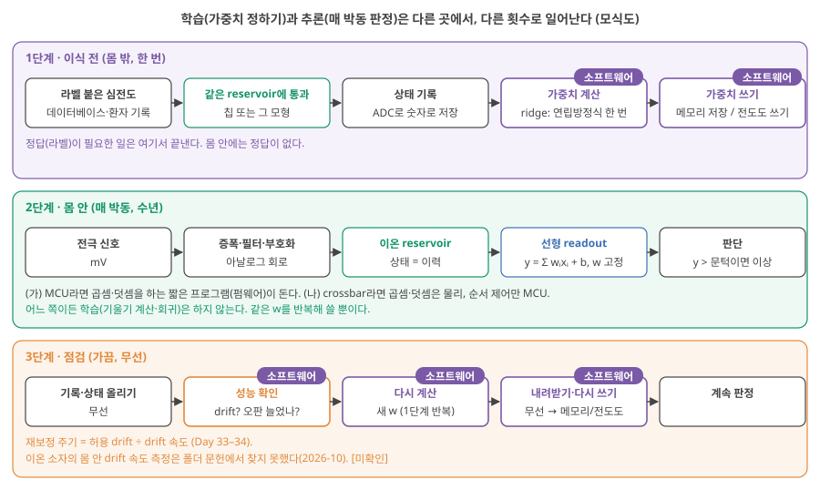
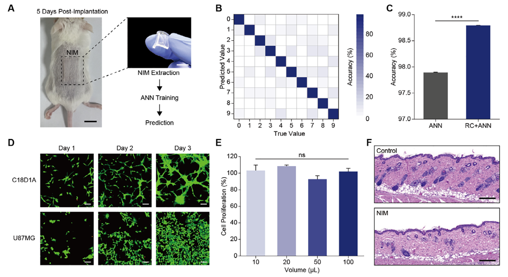
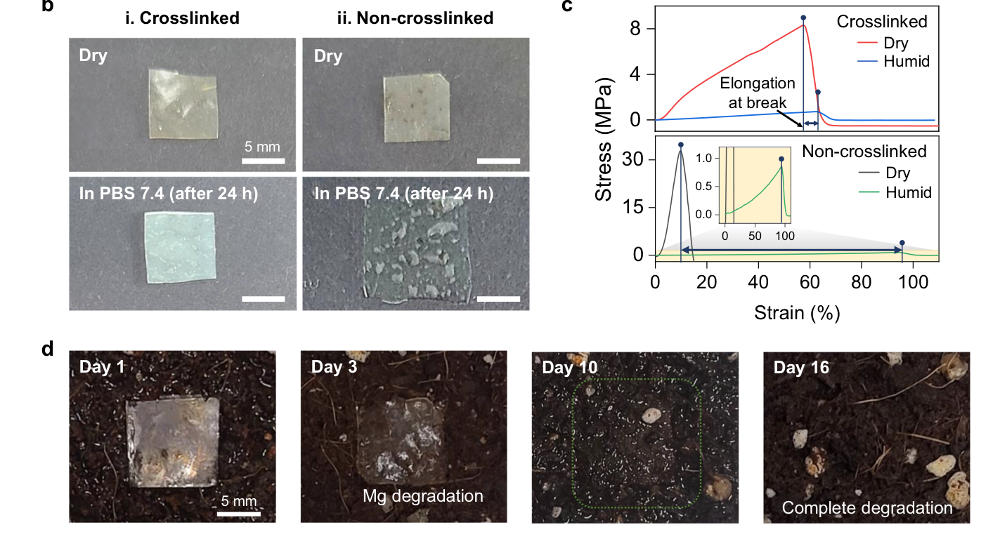

Day 52. readout·전원·안전, 그리고 이길 수 있는 문제
Phase 5 · 나는 무엇을 연구해야 하는가
이번 질문 — 몸 안 장치의 readout·전원·안전 조건은 무엇이고, 고분자 이온 소재가 이길 수 있는 문제는 어디인가?
왜 배우나 (내 소재 연구와의 연결) — 내 reservoir 뒤의 readout을 선형으로 둘지, 어디서 학습할지, 이온 소자가 시스템 에너지를 정말 줄이는지는 연구 설계의 결정이고 실험 선택(어떤 기준선과 비교할지)을 바꿉니다. 오늘은 1년 에너지 예산과 '같은 전극 + 증폭 + ADC + MCU' 기준선 개념으로 내 소재가 이길 수 있는 문제와 먼저 재야 할 숫자를 정합니다.
오늘의 장면 (입력 → 내부 변화 → 출력) — 입력 = reservoir 상태 120개(x) → 곱해서 더하기 y = Σwᵢxᵢ + b(w는 몸 밖에서 ridge로 한 번 학습) → 문턱과 비교 → 출력 = 정상 / 이상. 에너지 예산은 입력 = 가정값(ADC 1 nJ/변환, 무선 50 nJ/bit, 펄스당 ½CV²) → 줄별 에너지 계산 → 출력 = 1년 µW·J와 가장 큰 줄.
오늘 반드시 — readout을 선형으로 두는 것은 이 교재의 기본 선택이고 이유는 세 가지다. 몸 안 판정의 가장 큰 에너지 이득은 원시 신호를 안 보내는 것이고, 이온 reservoir는 구동 에너지가 ADC보다 작을 때만 이득이다. 어떤 후보도 기준선보다 낫다는 측정은 아직 없다.
나중에 더 봐도 되는 것 — Wright 2022 같은 폴더 밖 논문, 안전 표준의 숫자, 출력 시연 논문들의 세부, 생분해 논문 그림, 영상. 후보 표의 네 줄 중 내 소재와 관계없는 줄은 훑기만 해도 됩니다.
다음으로 넘어가는 기준 — '오늘 반드시'를 내 말로 한두 문장 말할 수 있으면 됩니다. 나머지는 뒤의 Day에서 다시 나옵니다.
이후 쓰이는 곳 — Day 53–54 가설과 기각 조건, Day 55–56 '같은 전극 + 증폭 + ADC + MCU' 기준선 대비 최소 검증 실험, Day 57–58 국소 학습 규칙과 차세대 후보
지난 학습 복습
지난 학습 단위(Day 51 · 응용 지도와 몸 안 심전도 장치: 감지에서 reservoir까지)의 핵심을 다른 예로 확인합니다. 고르는 즉시 맞았는지와 이유가 보입니다. 틀려도 아래 학습자료는 그대로 열려 있고, 틀린 문제에는 다시 볼 곳이 붙습니다.
학습자료
4. 몸 안 심전도 장치 (2): 상태 읽기, 선형 readout, 학습, 소프트웨어
이 구간을 읽고 나면 이 교재가 readout을 선형(곱해서 더하기)으로 두는 세 가지 이유와 그 선택의 범위를 말하고, 가중치를 어디서 학습해 어떻게 장치에 넣는지, 이 교재가 고른 구성(몸 밖 오프라인 학습 + MCU 제어)에서 소프트웨어가 맡는 곳이 어디인지, 그리고 완전 아날로그가 어디까지 가능한지 구분해 설명할 수 있다.
4-1. 왜 선형 readout인가
상황. reservoir에서 읽은 상태 120개로 정상/이상 박동을 가르려 합니다. readout을 선형으로 둘지, 신경망으로 둘지는 소자의 기여를 어떻게 확인하느냐를 바꾸는 연구 설계 결정입니다.
reservoir computing의 출발점을 다시 떠올립니다. RNN(과거 상태를 다음 단계로 넘기는 신경망)은 시간을 거슬러 기울기를 곱해 내려가야 해서 학습이 어려웠고, RC는 안쪽(reservoir)은 고정하고 마지막 층만 학습해 그 어려움을 피했습니다(Day 12 3구간).
먼저 작은 숫자로: readout이 하는 일. 3구간 단계 ⑥의 readout을 상태 두 개로 줄여 봅니다. 정상 박동 끝의 상태가 \(x = (0.8, 0.2)\), 이상 박동 끝의 상태가 \(x = (0.3, 0.7)\)입니다. 가중치 \(w = (-1, 1)\), \(b = 0\)이면 정상은 \(y = -0.8 + 0.2 = -0.6\), 이상은 \(y = -0.3 + 0.7 = 0.4\). 문턱을 0에 두고 "0보다 크면 이상"(단계 ⑦)이라고 정하면 둘이 갈립니다. readout이 한 일은 곱셈 둘, 덧셈 하나, 비교 하나입니다. 상태가 120개여도 하는 일의 종류는 같습니다.
몸 안 장치에서 readout을 이렇게 선형(곱해서 더하기)으로 두는 것은 이 교재의 기본 선택입니다. 비선형 readout도 쓸 수 있고 실제 논문도 있습니다(아래). 기본으로 고른 이유는 세 가지입니다. 저비용으로 학습하고, 성능 가운데 소자의 기여를 가려내기 쉽기 때문입니다.
비선형 일은 reservoir가 이미 했다. reservoir는 입력 이력을 여러 상태로 비선형하게 펼칩니다(Day 13 기초). 펼친 뒤에는 정상 박동과 이상 박동의 상태들이 직선(면) 하나로 갈라질 수 있는 경우가 많고, 그러면 readout은 그 직선만 그으면 됩니다(Day 17 기초: 선형 분리). 이것이 RC의 약속이고, 그 약속이 이 소자에서 지켜지는지는 원시 입력 기준선(소자를 빼고 원래 입력을 같은 readout에 넣은 비교)으로 확인해야 합니다(Day 47 1구간: baseline 칸).
학습이 연립방정식 한 번이다. 선형 readout의 가중치는 ridge 회귀(정답과의 오차 제곱 합에 가중치 크기의 벌점을 더한 값을 가장 작게 하는 \(w\)를 연립방정식 한 번으로 구하는 방법)로 풉니다(Day 13 기초: ridge). 이온 소자의 안쪽은 정확한 미분 가능한 식을 대개 모르므로, 소자를 통과해 기울기를 구하는 학습(역전파)은 바로 쓰기 어렵습니다. 소자 모형을 따로 만들어 그 모형으로 기울기를 근사하거나(물리 인식 학습, physics-aware training) 소자 안에서 국소 규칙으로 학습하는 연구도 있지만 (예: Wright 등 2022, Nature 601, 549, doi:10.1038/s41586-021-04223-6) 폴더 밖 논문. 서지만 Claude의 기억, 본문 대조 안 함, 비용과 난도가 큽니다. 소자 밖의 readout만 학습하면 소자 안을 몰라도 학습할 수 있고(이 점은 비선형 readout도 같습니다), 선형이면 그 학습이 연립방정식 한 번으로 끝납니다.
구별할 것: (ㄱ) reservoir는 고정하고 소자 밖의 readout만 학습(선형이든 비선형이든), (ㄴ) 소자 안의 상태나 연결을 직접 학습. RC는 (ㄱ)이고, 이 교재의 기본은 (ㄱ) 가운데 선형 readout입니다.
그리고 정답이 붙은 박동이 몇백 개뿐이어도 과적합(학습 데이터에만 맞고 새 데이터에 틀리는 것)이 덜합니다. 정해야 할 숫자가 상태 수(여기서는 120개와 \(b\) 하나)뿐이기 때문입니다.
계산이 작고, 물리로도 할 수 있다. 위 예의 곱셈 둘·덧셈 하나를 상태 120개로 늘리면 판정 한 번에 곱셈 120번과 덧셈 120번(\(b\) 포함, MAC 120번, Day 3 3구간)입니다. 작은 MCU에게 가벼운 일이고, 곱해서 더하기는 crossbar가 Ohm 법칙과 전류의 합으로 물리적으로 하는 계산과 정확히 같습니다(Day 49–50). 비선형 readout(예: 은닉층이 있는 신경망)은 둘 다 어렵게 만듭니다.
선형이 아닌 readout을 쓰면. Lee 2026 (AFM)은 은닉층(입력과 출력 사이에서 비선형 함수를 거치는 중간 계산 층, Day 7 기초 2) 셋의 다층 신경망을 readout으로 썼습니다 Lee 2026 (AFM), p.4. 그러면 (1) 정확도의 얼마가 소자에서 왔는지 가르기 어렵고(Day 48: Lee 2026 (AFM)), (2) 학습이 경사 하강(gradient descent)을 수십 epoch(가진 학습 데이터를 모두 한 번씩 쓰는 한 바퀴, Day 11) 반복하는 일이 되어 몸 밖 컴퓨터의 부담이 커지며, (3) crossbar 한 장으로 물리 계산을 할 수 없습니다. 비선형 readout이 틀린 것은 아닙니다. 소자 바깥의 신경망이 일을 더 많이 하게 되므로, 그때는 같은 비선형 readout에 원시 입력을 넣은 기준선과 비교해야 소자의 몫을 말할 수 있습니다. 해석 몸 안 장치에서 readout을 선형으로 두는 것은 RC의 원래 설계를 지키면서 소자의 기여를 가장 쉽게 확인하는 길입니다.
여기까지: 상태 두 개짜리 예(정상 −0.6, 이상 0.4, 문턱 0)로 선형 readout이 하는 일을 계산하고, 선형으로 두는 세 이유(비선형은 reservoir가 이미 했다 / 학습은 ridge 한 번 / 계산이 작고 crossbar로도 된다)를 말할 수 있다. 다음: 가중치는 어디서 학습하고, 이 구성에서 소프트웨어는 어디를 맡나.
4-2. 가중치는 어디서 학습하나, 그리고 소프트웨어는 어디에 필요한가
무엇을 볼지. 그림 6은 세 띠입니다. 위(보라)는 이식 전에 몸 밖에서 한 번, 가운데(초록)는 몸 안에서 박동마다, 아래(주황)는 가끔 무선으로 하는 일입니다. 정답(라벨)이 필요한 일이 어느 띠에 있는지, 그리고 보라 '소프트웨어' 배지가 어느 띠에 몰려 있는지를 보세요.

1단계 — 이식 전, 몸 밖에서 한 번. 학습에는 정답(라벨)이 붙은 박동이 필요합니다. 공개 데이터베이스(Zhong 2022가 쓴 MIT-BIH처럼)나, 의사가 판독한 환자의 기록입니다 [미확인: 실제 임상 절차]. 이 박동들을 그 장치에 들어갈 바로 그 reservoir에 통과시켜 상태를 기록합니다. 다른 칩의 상태로 학습한 가중치는 소자 간 편차 때문에 그대로 옮겨지지 않기 때문입니다(Day 33 3-2절). 기록한 상태와 정답으로 컴퓨터가 ridge 회귀를 풀어 \(w\)를 구합니다. 그다음 \(w\)를 장치에 넣습니다. 구성 (가)면 메모리에 숫자로 적고, 구성 (나)면 쓰고-읽고-고치기를 반복해 전도도로 씁니다. Zhong 2022에서는 이 쓰기 순환이 PC의 파이썬 프로그램으로 돌았습니다 Zhong 2022, p.680.
2단계 — 몸 안, 매 박동. 장치는 같은 \(w\)로 곱해서 더하고 문턱과 비교할 뿐입니다. 기울기 계산도, 회귀도 하지 않습니다. 1초에 한 번씩 수년간 반복합니다.
3단계 — 가끔, 점검과 재보정. 소자가 시간에 따라 변하면(drift) 같은 박동에 다른 상태가 나오고, 처음의 \(w\)로는 판정이 틀리기 시작합니다. 장치가 기록과 상태를 무선으로 올리면 몸 밖 컴퓨터가 성능을 확인하고, 필요하면 새 \(w\)를 계산해 내려보냅니다. 이때 다시 정답이 붙은 박동이 필요하다는 것이 몸 안 장치의 어려운 점입니다(누가, 얼마나 자주 라벨을 붙이나 미확인). 소자가 스스로 가중치를 고치는 on-chip training(= in-situ training)은 이 폴더의 이온 RC 문헌에서 시연을 찾지 못했습니다. 폴더에서 소자 위 학습을 하드웨어로 보인 것은 비이온 소자로 만든 Kim 2026의 비지도 학습 회로가 유일합니다 Kim 2026, p.543.
이 구성에서 소프트웨어가 맡는 곳. 사용자가 "어디까지 하드웨어로 되고, 어디서 프로그램이 필요한가"를 물을 때의 답입니다. 아래 표는 그림 2(Day 51)·6의 구성, 곧 가중치를 몸 밖 컴퓨터에서 ridge 회귀로 한 번 학습해 장치에 쓰고, 장치 안에서는 MCU가 순서를 정하는 구성을 기준으로 합니다. 표의 "필수"는 이 구성에서의 필수이지, 물리적으로 가능한 모든 학습·제어 방식의 필수조건이 아닙니다. 예를 들어 순서 제어나 통신 규약은 프로그램 대신 고정된 디지털 논리 회로(정해진 순서대로 상태를 바꾸는 회로)로 만들 수도 있고, 소자 안에서 국소 규칙으로 가중치를 고치는 하드웨어 학습 회로도 연구됩니다(폴더에서는 비이온 소자로 만든 Kim 2026의 비지도 학습 회로 Kim 2026, p.543). 그런 방식은 이 폴더의 이온 RC 문헌에서 확인되지 않았고, 정답(라벨)이 필요한 학습이라면 라벨을 누가 어떻게 주는지는 어느 방식이든 남습니다. 해석
| 일 | 어디서 | 이 구성에서 소프트웨어가 필요한가 |
|---|---|---|
| 가중치 학습(ridge 회귀) | 몸 밖 컴퓨터 | 필수 (연립방정식을 푸는 프로그램) |
| 가중치 쓰기(전도도에 쓸 때) | 몸 밖 컴퓨터 + 장치 MCU | 필수 (읽고–비교하고–펄스 주는 순환) |
| 순서·시간 제어(언제 펄스, 언제 읽기) | 장치 MCU | 필수 (펌웨어(firmware): 칩에 넣어 둔 작은 프로그램. 고정 논리 회로로 대신하는 구성도 가능) |
| 기록 저장, 무선 통신 | 장치 MCU + 몸 밖 | 필수 (통신 규약) |
| 재보정 판단 | 몸 밖 | 필수 |
| 증폭·필터 | 장치의 아날로그 회로 | 불필요(회로) |
| reservoir 계산 | 이온 소자 | 불필요(물리) |
| readout 곱셈·덧셈 | (가) MCU / (나) crossbar | (가) 필요(짧은 프로그램) / (나) 불필요(물리) |
| 문턱 비교 | 비교기(comparator) 회로 또는 MCU | 회로로 하면 불필요 |
4-3. 완전 아날로그는 가능한가
Day 49–50에서 "완전 아날로그"가 가능한 조건을 봤습니다(Day 50 기초: reservoir만 vs readout까지). 몸 안 장치에 적용하면 답은 둘로 나뉩니다.
- 신호 경로는 원리상 가능하다. ② 증폭·필터 → ③ 아날로그 부호화 → ④ reservoir → ⑤ 적분기 → ⑥(나) crossbar → 비교기까지, 숫자로 바꾸지 않고 판정에 이를 수 있습니다. Zhong 2022가 몸 밖에서, 산화물 소자로, 저장된 심전도로 이 경로를 보였습니다 Zhong 2022, p.673–677. 조건은 readout 가중치가 재보정 주기 동안 충분히 안정하다는 것이고(비휘발·저drift), 이온 소자는 대체로 휘발성(volatile)이라 readout은 다른 소자가 맡아야 할 가능성이 큽니다(Day 49–50).
- 장치 전체는 아니다. 순서 제어, 기록, 무선, 재보정은 디지털 부품이 필요하고, 이 구성에서는 그 일을 소프트웨어(펌웨어)가 맡습니다. 그리고 몸 밖에서 학습하는 이 구성에서는 학습 단계에 상태를 숫자로 기록해야 하므로 ADC가 필요합니다. Zhong 2022에서도 ADC는 학습 중 상태 샘플링과 가중치 쓰기에 쓰였습니다 Zhong 2022, p.679.
즉 "완전 아날로그"는 매 박동 반복되는 추론의 신호 경로에서 ADC와 디지털 곱셈을 없앤다는 뜻이고, 그 이득은 그 경로가 장치 에너지에서 차지하는 몫만큼입니다. 그 몫이 얼마인지가 5구간의 예산입니다.
여기까지: 그림 6의 세 띠로 학습(몸 밖, 한 번)·추론(몸 안, 매 박동)·재보정(가끔)을 가르고, 이 구성에서 소프트웨어가 맡는 일과 물리·회로로 할 수 있는 일을 표로 나누며, '완전 아날로그'가 추론의 신호 경로를 말한다는 것을 설명할 수 있다. 다음: 판단 뒤의 출력, 1년 에너지 예산, 안전.
- 이 교재가 readout을 선형으로 두는 세 이유(필수조건은 아님): reservoir가 비선형 일을 이미 했다 / 학습이 ridge 한 번이고 라벨이 적어도 된다(소자 안을 몰라도 되는 것은 소자 밖 readout만 학습하기 때문이며 비선형 readout도 같다) / 곱해서 더하기는 MCU에 가볍고 crossbar가 물리로 할 수 있다. 비선형 readout을 쓰면 같은 readout에 원시 입력을 넣은 기준선과 비교해야 소자의 몫을 말할 수 있다.
- 학습은 몸 밖에서 한 번(그 장치의 reservoir로 상태를 기록해야 함), 몸 안에서는 같은 w로 판정만, 가끔 무선으로 재보정. 이온 RC의 on-chip training은 이 폴더의 문헌에서 시연을 찾지 못했다.
- 몸 밖 오프라인 학습 + MCU 제어 구성에서 소프트웨어가 맡는 곳: 학습, 가중치 쓰기, 순서 제어, 기록·무선, 재보정 판단. 물리·회로로 가능한 곳: 증폭·필터, reservoir, crossbar readout, 문턱 비교. 학습·제어 방식이 다르면(고정 논리 회로, 하드웨어 학습 회로) 이 목록도 달라진다 해석.
- 완전 아날로그는 추론 신호 경로에서만 가능하다(Zhong 2022, 몸 밖) Zhong 2022, p.673–680. 이 구성의 장치 전체는 디지털 부품이 필요하다.
5. 몸 안 심전도 장치 (3): 출력, 전원, 안전, 그리고 지금 어디까지 왔나
이 구간을 읽고 나면 판단 뒤의 출력(기록·무선·자극)과 전원·봉지·발열·생체적합성의 조건을 말하고, 가정값으로 짠 1년 에너지 예산에서 무엇이 배터리를 먹는지 계산하며, 이상적 구성과 폴더 논문이 실제로 도달한 수준을 단계마다 표로 대조할 수 있다.
5-1. 출력: 판단을 무엇으로 바꾸나
4구간까지 판정 \(y\)가 나오는 데까지 봤습니다. 이제 판정 뒤에 장치가 무엇을 하는지 봅니다. 판단 뒤의 출력은 셋입니다. 기록(이상 박동 전후의 신호를 메모리에 저장), 경보(무선으로 휴대폰·서버에 알림), 자극(심장에 짧은 전류). 폴더에는 이온 소자가 몸 안에서 "출력"을 한 시연이 하나 있습니다. Yoo 2025의 이온 다이오드 약물 방출 장치는 쥐의 복강, 종양 옆에 이식되어, 배터리와 무선 스위치로 2시간마다 6분 동안 약을 내보냈습니다 Yoo 2025, p.5. 이 장치는 감지나 판단 없이 정해진 시간표대로 동작했습니다. 즉 "판단 → 출력"의 고리가 닫힌 것은 아닙니다. 판단에 따라 출력을 바꾼 것은 Pei 2026입니다. 몸 안 소자의 상태로 몸 밖 컴퓨터가 음성 명령과 근육 pH 상태를 판별하고, 그 결과를 PCB가 좌골신경 자극 세기로 바꿔 다리 움직임 각도를 조절했습니다(마취한 쥐, 급성) Pei 2026, p.1205. 출력은 이온이 아니라 전극 자극이었습니다. Dai 2024는 압력을 받으면 이온 전위를 내는 하이드로겔을 쥐의 좌골신경에 백금선으로 이어 근육을 움직였지만, 하이드로겔은 몸 밖에 있었고 마취한 쥐에서 한 급성 실험이었습니다 Dai 2024, p.6, 8. 저자들은 생체 내 이식을 앞으로 시험할 일로 적습니다 Dai 2024, p.7. Zhu 2025는 무선 전력·데이터 전송과의 통합이 "완전히 이식할 수 있는 닫힌 고리(closed-loop) 장치"에 필수라고 씁니다 Zhu 2025, p.18.
5-2. 전원: 1년 에너지 예산, 무엇이 배터리를 먹나
몸 안 장치는 배터리를 바꾸기 어렵습니다. 그래서 1년 동안 무엇이 에너지를 쓰는지가 중요합니다. 실제 부품 값은 폴더에 없으므로, Day 31 3-2절 표의 가정값(ADC 1 nJ/변환, 무선 50 nJ/bit, Day 31 3-2: 가정 표)과 Day 49–50의 계면 충전 계산으로 자릿수만 봅니다. 모든 숫자는 [가정]이며 측정이 아닙니다.
원시 심전도를 1년 내내 무선으로 보내는 것과, mm 크기 이온 소자 24개를 1초에 72번씩 ±1 V로 충전하는 것 중 어느 쪽이 1년에 에너지를 더 쓸까요? 동전형 전지 하나(약 2,500 J)와 견주면 어떨까요? 단계를 넘기기 전에 어림해 보세요.
기준: 1년 = 31,536,000 s. 심전도는 1초에 72번 샘플한다고 둡니다(Zhong 2022의 72 Hz Zhong 2022, p.675).
경우 1 — 판정하지 않고 원시 신호를 무선으로 다 보낸다. 샘플 하나 12 bit [가정]이면 72 × 12 = 864 bit/s. × 50 nJ/bit = 43,200 nJ/s. 1 nJ/s = 10⁻⁹ J/s = 10⁻⁹ W이므로 43,200 nJ/s = 4.32 × 10⁻⁵ W = 43.2 µW. 1년이면 43.2 × 10⁻⁶ × 31,536,000 ≈ 1,362 J.
경우 2 — 장치 안에서 디지털 readout으로 판정(구성 가). 상태 120개를 72번/s 모두 ADC로 바꾸면 120 × 72 = 8,640 변환/s × 1 nJ = 8.64 µW, 1년 약 272 J. 경보만 보낸다면(1시간에 한 번 1,000 bit [가정]) 1년 8,760 × 1,000 × 50 nJ ≈ 0.44 J. MCU의 곱셈·덧셈 에너지는 가정값이 없어 넣지 않았습니다 미확인.
경우 3 — 아날로그 readout(구성 나). 상태–readout 사이 ADC가 없으므로 경우 2의 272 J이 거의 사라지고, 끝의 비교기와 경보만 남습니다(비교기 에너지 미확인).
잊기 쉬운 항목 — 이온 reservoir 자체. 1 mm² 전극의 이온 소자 24개를 ±1 V 펄스로 1초에 72번 충전한다면, 펄스 하나 약 50 nJ입니다(Day 49–50의 ½CV² 가정: 1 mm² 전극 하나의 계면 용량 \(C\) = 0.1 µF에 1 V이면 ½ × 10⁻⁷ × 1² = 5 × 10⁻⁸ J. 이 \(C\)는 3-2절 ⓒ와 같은 전극 하나의 값이고, 차단 주파수 계산의 0.05 µF는 감지 전극 두 개를 직렬로 이은 값입니다). 그러므로 50 nJ × 24 × 72 = 86,400 nJ/s = 86.4 µW, 1년 약 2,725 J이고, 경우 1의 무선 전송보다 큽니다.
구동 전압을 0.1 V로 낮추면 100배 줄어 0.864 µW, 전극을 100 µm × 100 µm(1 mm²의 1/100)로 줄여도 100배 줍니다(그 대가는 3-2절: 같은 계면이 신호를 받는 전극이라면 차단 주파수가 올라갑니다).
이 줄은 두 가지를 적게 잡았습니다. (1) ½CV²는 커패시터에 저장되는 에너지이고, 전원이 펄스 한 번(충전 → 방전)에 실제로 내놓는 것은 그 두 배인 \(CV^2\)입니다(Day 49 3-1절). (2) Zhong 2022처럼 마스크 5칸을 시간 단계마다 따로 펄스로 건다면, 소자 하나가 받는 펄스는 1초에 72번이 아니라 360번입니다. 둘을 다 넣으면 이 줄은 10배까지 커질 수 있습니다.
배터리와 견주기. 동전형 리튬 전지 CR2032 하나는 3.0 V, 약 235 mAh입니다 확인 출처: Energizer CR2032 데이터시트. 에너지로 바꾸면 3.0 V × 0.235 A × 3,600 s ≈ 2,540 J(V·A·s = J) Claude 계산. 위의 이온 소자 줄(1년 약 2,725 J, 적게 잡은 값)만으로 이 전지 하나를 1년 안에 다 씁니다. 실제 이식 기기의 전지는 종류·크기가 다르므로 미확인, 이 비교는 자릿수 감각용입니다.
정리. 이 가정 아래서 순서는 (이온 소자 충전, mm 크기·1 V일 때) > (원시 신호 무선 전송) > (디지털 readout의 ADC) ≫ (경보만 전송)입니다. 두 가지가 보입니다. 첫째, 몸 안에서 판정하는 것의 가장 큰 이득은 원시 신호를 보내지 않는 것이고, 이것은 reservoir가 이온이든 디지털이든 같습니다. 둘째, 이온 reservoir가 이득이 되려면 소자 구동 에너지(전압·면적)가 ADC보다 작아야 하고, 지금의 mm 크기·±1 V 소자는 그 반대일 수 있습니다. 해석 이것이 교차표의 에너지 칸이 "?"인 이유이고, 측정해야 할 첫 숫자입니다.
여기까지: 가정값으로 1년 에너지 예산의 줄(이온 소자 충전 약 86 µW, 원시 신호 무선 약 43 µW, 상태 ADC 약 8.6 µW, 경보만 1년 약 0.44 J)을 계산하고, 몸 안 판정의 가장 큰 이득과 이온 reservoir가 이득이 되는 조건을 말할 수 있다. 다음: 생체적합성·봉지·발열·안전, 그리고 이상적 구성과 지금 수준의 대조.
5-3. 생체적합성·봉지·발열·안전
폴더에 있는 것. Lee 2026 (AFM)은 하이드로겔을 독성 없는 PDMS로 봉지하고 Lee 2026 (AFM), p.2, 용출액으로 세포 생존(3일)과 증식을, 피하 이식 4일째 조직 염색으로 뚜렷한 염증 침윤이나 괴사가 없음을 보였습니다 Lee 2026 (AFM), p.6. Yoo 2025는 쥐에서 0·7·14일 혈액으로 염증·체중 변화·말초 면역 독성이 없음을 보였고 Yoo 2025, p.3, 생체 내 시험에서 전극을 실리콘(Kwik-Sil)으로 덮었습니다 Yoo 2025, p.8. Chang 2025는 소자가 흙 속에서 16일 안에 완전히 분해되고 인산완충식염수(PBS, pH 약 7.4)에서 24시간 넘게 형태를 유지했다고 보고하지만, 세포·동물 시험은 없습니다 Chang 2025, p.2–3.
폴더가 요구하는 것. Aluru 2026은 생체와의 통합을 일곱째 지식 공백으로 두고, 몸과 맞물리는 소재로 생물학적으로 호환되는 전압 안에서 동작해야 한다고 쓰며 Aluru 2026, p.599, 장기 안정성·효과적인 열 관리·재현성·생체 환경과의 매끄러운 통합을 남은 과제로 꼽습니다 Aluru 2026, p.599. 열은 별도의 지식 공백(넷째)입니다 Aluru 2026, p.595–596. Zhu 2025는 탈수·이온 누출·섬유화를 막는 봉지와 표면 설계, 6개월 이상의 생체 내 연구를 요구합니다 Zhu 2025, p.19–20. Wang 2022의 화학 뉴런은 도파민을 내보내려고 하이드로겔을 37.5–43.5 °C로 가열했고 Wang 2022, p.586, 저자들은 응답 시간·전력·체계적 봉지가 아직 탐구할 과제라고 씁니다 Wang 2022, p.593.
폴더에 없는 것. 이식 의료기기가 지켜야 하는 조직 온도 상승 한계, 누설 전류(leakage current: 장치에서 몸으로 의도하지 않게 새는 전류) 한계, 멸균, 수년 단위의 신뢰성 기준은 폴더에 없습니다 미확인. 하나만 예를 들면, 능동 이식 의료기기의 유럽·국제 표준(ISO 14708-1 계열)은 장치 겉면이 정상 체온보다 2 °C 넘게 뜨거워지지 않게 하는 것으로 알려져 있습니다 미확인 표준 원문은 유료라 열람하지 못했고, 의료기기 공학자의 공개 해설(Prutchi 2013, implantable-device.com)로만 확인. 설계 숫자로 쓰려면 표준 원문을 확인해야 합니다. 이 한계가 이온 소자와 바로 부딪히는 예가 폴더에 있습니다. Wang 2022는 하이드로겔을 37.5–43.5 °C로 가열해 도파민을 내보냈는데(위), 위쪽 끝은 체온보다 6 °C 넘게 높습니다 해석. 생리 식염수 농도(약 150 mM)와 pH 7.4에서 이온 소자의 정류·기억 특성을 잰 결과도 이번에 대조한 범위에는 없었습니다(Pei 2026은 몸 안 근육 곁에서 동작했고 pH 7.4·7.2·7.0에 따라 달라지는 응답을 판별에 썼지만, 그 근거 자료는 Extended Data·SI에 있고 이번에 대조하지 않았습니다 Pei 2026, p.1205). Lee 2026 (AFM)은 10 mM KCl, pH 6에서 소자를 준비했습니다 Lee 2026 (AFM), p.7. 해석 고정 전하의 해리가 pH에 따라 달라지는 폴리전해질 접합(Day 45 기초)에서는 이 차이가 동작 자체를 바꿀 수 있습니다. 가설
직류와 전하: 왜 한 방향 전류를 피하나. 조직에 한 방향 전류(직류)가 오래 흐르면 그림 5(Day 51)의 ⓓ를 지나는 반응이 계속 일어납니다. 물이 분해되어 기체와 pH 변화가 생기거나 금속이 녹아 나와, 조직과 전극이 함께 상합니다 [해석: 전기화학 일반 원리]. 그래서 몸에 전류를 보내는 장치는 펄스마다 반대 방향 전류로 전하를 되돌리는(전하 균형, charge balance) 방식을 쓰는 것으로 알려져 있고 [미확인: 제품 세부], Yoo 2025가 전압 방향을 번갈아 건 것도 같은 문제(전극 소모)를 피하려는 것이었습니다 Yoo 2025, p.5. ±1 V 펄스로 동작하는 이온 소자를 조직에 직접 닿게 두는 구성(3-3절)이라면, 조직 쪽으로 새는 직류가 얼마인지를 측정으로 보여야 합니다. 해석
5-4. 이상적 구성 vs 지금 도달한 수준
원문 그림을 읽기 전에. 아래 Lee 2026 (AFM)의 원문 Fig. 4는 위 세 패널(A 이식과 적출 과정, B 혼동 행렬(1구간에서 본, 실제 답마다 어떤 답을 냈는지 센 표), C 정확도 비교)과 아래 세 패널(D–F 생체적합성)입니다. A의 화살표 순서("NIM Extraction → ANN Training → Prediction")와 C의 세로축이 어디서 시작하는지를 보세요.

| 단계 | 이상적 구성 | 실제 이식 기기에 쓰이는 것 미확인 | 폴더 논문의 시연 (조건) | 폴더 문헌에서 찾지 못한 것 가설 |
|---|---|---|---|---|
| ① 전극–조직 | 부드럽고 안정한 이온 계면 | 금속 전극·리드 | 하이드로겔–조직 계면, 쥐 복강(Yoo 2025, 출력용) | 이온 계면으로 심전도를 장기 감지 |
| ② 증폭·필터 | 저전력 AFE | 있음 | Zhong 2022의 증폭·MUX(몸 밖) | — |
| ③ 부호화 | 아날로그 마스크 | — | Zhong 2022(몸 밖) | 이온 소자에 맞춘 저전압 부호화 |
| ④ reservoir | 이온 소자 N개, 몸 안 동작 | — | 마취한 쥐 몸 안에서 상태 측정, 음성·pH 판별(Pei 2026, 급성, readout은 컴퓨터); 이식 5일 뒤 꺼내서 MNIST(Lee 2026 (AFM)); 심전도 하드웨어 RC는 산화물·몸 밖(Zhong 2022) | 몸 안에서 이온 소자로 심전도를 오래 계산 |
| ⑤ 상태 읽기 | 저전력 TIA·적분기 | — | Zhong 2022(몸 밖) | — |
| ⑥ readout | 선형, crossbar 또는 MCU | MCU의 소프트웨어 판정 미확인 | 아날로그 crossbar(Zhong 2022, 몸 밖), 나머지 이온 논문은 컴퓨터 | 이온 reservoir + 아날로그 readout |
| ⑦ 출력 | 경보·자극, 닫힌 고리 | 경보·자극 | 이식 약물 방출(시간표, Yoo 2025), 급성 신경 자극(Dai 2024), 판별 결과로 좌골신경 자극(Pei 2026, 몸 밖 컴퓨터·PCB 경유, 급성) | 몸 안 장치만으로 판단에 따라 출력하는 닫힌 고리 |
| 전원·무선 | 수년 배터리, 무선 | 있음 | 배터리 + 무선 스위치(Yoo 2025) | 이온 RC 장치의 에너지 측정 |
| 봉지·안전 | 수년, 37 °C 체액 | 있음 | PDMS 봉지, 4–14일 생체 시험(Lee, Yoo) | 6개월 이상 생체 내 이온 소자 Zhu 2025, p.19 |
한 줄 요약. 각 단계의 부품은 어딘가에서 한 번씩 보였지만, 몸 안의 한 장치로, 오래 이어진 시연은 폴더 문헌과 Claude가 확인한 범위에서 찾지 못했습니다. 가장 가까운 것은 Pei 2026의 급성 동물 실험으로, ④는 몸 안에 있었지만 부호화·readout·자극 신호 생성은 몸 밖 컴퓨터와 PCB가 했습니다. 가장 먼 거리는 ④(몸 안에서 이온 소자로 오래 계산)와 수명입니다. 해석
여기까지: 출력 시연들(시간표대로 약물 방출, 급성 신경 자극, 몸 밖 컴퓨터를 거친 판별 → 자극)의 조건을 구별하고, 표의 단계마다 '이상적 구성 / 실제 기기 / 폴더 시연 / 찾지 못한 것'을 짚을 수 있다. 다음: 1–5구간을 모아, 고분자 이온 소재가 이길 수 있는 문제의 조건.
- 출력의 폴더 시연: 이식 약물 방출(시간표대로, 배터리·무선 스위치) Yoo 2025, p.5, 급성 신경 자극(하이드로겔은 몸 밖) Dai 2024, p.6. 판단 → 출력의 고리는 Pei 2026이 몸 밖 컴퓨터·PCB를 거쳐 급성으로만 이었다 Pei 2026, p.1205.
- 1년 에너지 예산[가정]: mm 크기 이온 소자 24개를 ±1 V로 72번/s 충전 ≈ 86 µW(약 2,700 J) > 원시 신호 무선 43 µW(약 1,360 J) > 디지털 readout ADC 8.6 µW(약 270 J) ≫ 경보만 0.44 J. 몸 안 판정의 큰 이득은 원시 신호를 안 보내는 것, 이온 reservoir의 이득은 구동 에너지가 ADC보다 작을 때만 해석.
- 생체 시험은 4–14일 수준(Lee, Yoo), 요구는 6개월 이상 Zhu 2025, p.19. 생리 식염수·pH 7.4에서의 동작 시험은 이번 범위에 없다.
- 단계의 부품은 따로따로 보였지만 몸 안의 한 장치로 오래 이어진 시연은 폴더 문헌에서 찾지 못했다(Pei 2026은 마취한 쥐에서 몸 밖 readout으로 급성).
6. 그래서 고분자 이온 소재가 이길 수 있는 문제는
이 구간을 읽고 나면 고분자 이온 소재가 경쟁력을 가질 수 있는 문제의 조건 네 가지를 말하고, 그 조건에 맞는 후보와 맞지 않는 응용을 교차표·장치 그림·에너지 예산을 근거로 가를 수 있다.
상황. 내 폴리전해질 접합 논문에서 "이 소재는 어떤 응용에서 유리한가"를 한 문단으로 써야 합니다. 이 구간은 교차표와 장치 그림에서 얻은 근거로 그 문단의 뼈대(조건 네 가지, 후보·비후보)를 만듭니다.
1–5구간을 모으면, 고분자 이온 소재가 이길 수 있는 문제의 조건이 보입니다. 정답이 아니라 판단의 틀입니다. 해석
- 이온·물·부드러움이 꼭 필요한 문제여야 한다. 교차표에서 "이온만 맞는 칸"(조직 계면, 젖은 환경, 화학 선택성, 부드러움)이 있어야 합니다. 그 칸이 없으면 전자 소자가 거의 모든 축에서 이깁니다.
- 속도·밀도·정밀도 요구가 이온의 허용 범위 안이어야 한다. τ가 ms–s, 노드가 수십–수백, 판정이 단순한 문제.
- 전자 해법도 거기서 비용을 치러야 한다. 예를 들어 전자 회로도 어차피 조직과의 이온–전자 변환을 해야 하고, 그 변환에 증폭기·전극 문제가 따라온다면, 그 자리에서 이온 소자가 일부 처리를 해 주는 것이 의미를 가질 수 있습니다.
- 요구 수명이 이온 소재가 버틸 수 있는 범위여야 한다. 수년 이식보다 수일–수주의 단기 이식, 생분해되어야 하는 장치, 교체가 쉬운 웨어러블이 현실적입니다. 가설
후보와 비후보. 조건에 비추면 이렇습니다. 해석
- 후보: (가) 조직과 닿는 경계의 전처리: 이온 소자가 전극 겸 첫 처리 단계가 되어, 신호를 이온인 채로 받아 느린 특징(적분, 박동 모양의 흔적)을 남기고 전자 회로에 넘기는 구성. Wang 2025가 그리는 "이온은 조직 가까이, 전자는 멀리"의 구도와 같습니다 Wang 2025 (Chem. Soc. Rev.), p.329. (나) 단기·생분해 이식: 수술 뒤 며칠–몇 주의 감시처럼 수명 요구가 짧고, 천연 고분자(Lee 2026 (AFM)의 히알루론산·키토산)나 생분해 소재(Chang 2025)의 장점이 사는 자리. (다) 화학·이온 종류를 시간 패턴으로 구별하는 감지: 여러 이온·분자의 신호를 구별하는 일은 이온의 고유한 자유도이고(Chen 2023, Aluru의 둘째 지식 공백), 환경 감시처럼 분–시간의 느린 문제는 τ도 맞습니다. (라) 연성 로봇·촉각 피부의 센서 옆 전처리: 부드러움·늘어남이 필요하고 노드가 적은 자리.
- 비후보: 데이터센터·대량 추론, 고해상도 영상, 정밀한 가중치 저장, 수년 이식에서 이온 소자가 장치 전체의 계산을 맡는 구성. 이 자리들에서는 교차표의 다섯 칸 이상이 "모자람"입니다.
후보마다 붙는 조건. 위 후보들은 '앞설 수 있다'는 것이지 늘 앞선다는 것이 아닙니다. 아래 표는 각 후보의 이유가 언제 성립하고 언제 깨지는지와, 그것을 가릴 첫 측정을 한 줄씩 적은 것입니다. 해석
| 후보 | 앞설 수 있는 이유 | 성립하는 조건 | 깨지는 경우 | 먼저 잴 것 |
|---|---|---|---|---|
| (가) 조직 경계 전처리 | 이온을 이온인 채로 받아, 증폭·변환의 일부를 줄인다 | 부피 용량이 커서 작은 면적에서도 계면 임피던스가 낮다(3-2절); 그 처리가 증폭기·ADC의 일을 실제로 줄인다 | 섬유화로 계면이 막힌다; ±1 V 구동이 조직 쪽 직류·반응을 만든다; 기준선과 부품 수가 같다 | 같은 면적 금속 전극 대비 임피던스와 신호 대 잡음비, 기준선 대비 에너지 |
| (나) 단기·생분해 이식 | 꺼내는 수술이 필요 없고 수명 요구가 짧다 | 요구 기간(수일–수주) 동안 성능이 유지되고 분해 산물이 안전하다 | 몸 안 분해 속도가 예측과 다르다(지금은 흙·PBS 시험뿐, 5-3절) | 몸 안 분해 시간과 그동안의 성능 drift |
| (다) 이온 종류 구별 감지 | 여러 이온·분자를 서로 다른 시간 패턴으로 구별한다(이온의 고유 자유도) | 대상 변화가 분–시간으로 느리고, 선택성이 생리 농도(약 150 mM 배경)에서도 남는다 | 배경 염이 선택성을 가린다; 이온 선택 전극(특정 이온에만 전위가 반응하는 전기화학 센서) + MCU가 같은 일을 한다 | 150 mM 배경에서의 구별 정확도, 이온 선택 전극 기준선 대비 |
| (라) 연성 로봇·촉각 피부 전처리 | 늘어나는 센서 바로 옆에서 처리한다 | 노드가 적고, 늘어남이 꼭 필요하며, 젖은 상태를 유지할 수 있다 | 탈수로 drift가 생긴다; 휘어지기만 하면 되는 자리라 얇은 전자 필름으로 충분하다 | 늘림 반복 뒤 상태 재현성, 건조 시간 |
원문 그림을 읽기 전에. 후보 (나)의 '생분해' 장점이 실제로 어떻게 생겼는지 Chang 2025의 원문 Fig. 2로 봅니다. b는 필름 사진(위 건조, 아래 PBS 24시간), c는 잡아당긴 곡선, d는 흙 속 16일의 사진입니다. d에서 소자가 언제 사라지는지, 그리고 그곳이 몸이 아니라 흙이라는 것을 보세요.

그리고 반드시 붙는 단서. 위 후보 어디에서도 이온 reservoir가 같은 전극 + 증폭 + ADC + MCU 소프트웨어(그림 2(Day 51)의 기준선)보다 정확도·에너지·크기 중 하나라도 낫다는 측정은 폴더에 없습니다. 후보는 "경쟁할 수 있을지 모르는 자리"이고, 그것을 "경쟁하는 자리"로 바꾸는 것은 그 기준선과의 비교 실험입니다. 이 실험이 Day 53–54·Day 55–56의 가설과 기각 조건의 재료가 됩니다.
이번 반론
가장 강한 반론은 이것입니다. "생체 인터페이스가 이온 소재의 자리라면, 이온은 전극만 하면 된다. 부드러운 이온 전극으로 신호를 받고, 계산은 처음부터 성숙한 CMOS 회로가 하면 된다. 왜 굳이 이온 reservoir가 계산까지 해야 하나? 계산을 이온으로 하면 내구·재현성·에너지라는 새 문제만 늘어난다."
이 반론은 강하고, 이번 자료의 상당 부분이 이 반론을 지지합니다. 교차표에서 이온만 맞는 칸은 대부분 계면의 칸이었고, 에너지 예산에서 mm 크기 이온 소자의 구동 에너지는 ADC보다 클 수 있었습니다. Wang 2025의 제안도 "이온은 조직 가까이, 계산은 전자 쪽"입니다. 그렇다면 이온 계산이 의미를 가지려면 계면에서 이온으로 처리하는 것이 무엇을 줄이는지를 보여야 합니다. 후보는 셋입니다. 증폭이 덜 필요해지거나(µV에서 동작하는 소자), 전자 쪽으로 보내는 데이터·변환 횟수가 줄거나, 이온–전자 변환 자체를 처리와 합쳐 부품이 줄어드는 것. 셋 다 폴더 문헌에서 측정을 찾지 못한 가설입니다. 이 반론에 대한 내 답을 양식의 "오늘의 반론" 칸에 적으세요. 반론을 받아들여 "이온은 계면, 계산은 전자"로 방향을 정하는 것도 정직한 답입니다.
그림 2(Day 51)를 다시 보고, 내 소재(예: 폴리전해질 접합, 이온겔)를 둘 수 있는 자리를 하나 고르세요(내 응용이 아직 정해지지 않았다면 이 사례 장치로 연습하면 됩니다). ① 경계(전극 겸 전처리), ④ 통 안 reservoir, ⑦ 출력(자극·방출) 중 어디인가요? 그 자리에서 내 소재가 기준선(같은 전극 + 증폭 + ADC + MCU)보다 무엇을 줄일 수 있는지 한 줄, 그것을 재는 실험 하나를 한 줄로 적어 보세요.
여기까지: 경쟁 조건 네 가지로 새 응용 하나를 후보/비후보로 가르고, 후보마다 '성립하는 조건 · 깨지는 경우 · 먼저 잴 것'을 말하며, '이온은 전극만, 계산은 CMOS' 반론에 답하려면 무엇을 재야 하는지 말할 수 있다. 다음: 총정리와 종합 퀴즈.
- 경쟁 조건: 이온·물·부드러움이 꼭 필요 / 속도·밀도·정밀도 요구가 낮음 / 전자 해법도 그 자리에서 비용을 치름 / 요구 수명이 짧거나 생분해가 필요 해석.
- 후보: 조직 경계 전처리, 단기·생분해 이식, 이온 종류 구별 감지, 연성 로봇 피부 전처리. 비후보: 대량 추론, 정밀 가중치, 수년 이식에서 계산 전체를 맡는 구성.
- 어느 후보도 "같은 전극 + 증폭 + ADC + MCU" 기준선보다 낫다는 측정은 폴더에 없다. 반론("이온은 전극만, 계산은 CMOS")은 강하다.
오늘의 총정리
자료를 덮고 아래 표를 먼저 머릿속으로 채운 뒤 펼쳐 보세요. 그다음 종합 퀴즈를 풉니다.
한 장 요약 펼치기
| 질문 | 한 줄 답 | 근거·조건 |
|---|---|---|
| 응용은 어디까지 | 이온 소자 응용은 "몸과 신호 주고받기"와 "측정 상태로 분류"로 갈리고, 둘이 만난 것은 Pei 2026의 급성 동물 실험뿐(readout은 몸 밖). 실제 사용은 없음 | [미확인: 제품] Aluru 2026, p.600 |
| 교차표 | 응용 × 사양 축, 칸마다 요구 vs 허용. 이온만 맞는 칸은 조직 계면·젖은 환경·화학 선택성·부드러움 | 에너지 칸은 대부분 "모름" |
| 사슬 | 전극(이온→전자) → 증폭·필터 → 부호화 → 이온 reservoir → 상태 읽기 → 선형 readout → 판단·출력, 전원·MCU·무선, 몸 밖 학습 | 사전 테스트와 '먼저 만들어 보기'의 그림과 비교해, 빠졌던 상자(증폭, 상태 읽기, 몸 밖 학습)가 달라질 지점 |
| 계면과 증폭 | 계면 = 조직 저항 – (이중층 용량 ∥ 반응 저항) + 전극 전위, 두 계면과 증폭기 입력 저항이 고역 통과를 만든다. 1 mV → 1 V는 1,000배 = 60 dB | f_c = 1/(2π·R_in·C): 1 mm² 두 개에 1 MΩ이면 3.2 Hz, 100 MΩ이면 0.032 Hz [가정 계산] |
| 왜 선형 readout(이 교재의 기본 선택) | 비선형은 reservoir가 했고, 학습은 ridge 한 번, 계산은 작고 crossbar로도 가능. 소자 안을 몰라도 되는 것은 소자 밖 readout만 학습하기 때문 | MLP readout도 틀린 것은 아니나, 같은 readout의 원시 입력 기준선과 비교해야 소자 몫을 말할 수 있고 학습·물리 구현이 무거워짐 |
| 학습과 소프트웨어 | 몸 밖 오프라인 학습 + MCU 제어 구성에서는 학습·가중치 쓰기·순서 제어·무선·재보정을 소프트웨어가 맡는다(모든 학습·제어 방식의 필수조건은 아님). 신호 경로는 물리·회로로 가능 | 완전 아날로그는 추론 경로에서만 Zhong 2022, p.679–680 |
| 숫자 하나 | mm 크기 이온 소자 24개 ±1 V, 72번/s ≈ 86 µW > 원시 신호 무선 ≈ 43 µW > 디지털 readout ADC ≈ 8.6 µW | 모두 [가정]. 측정 필요 |
| 지금 어디까지 | 단계 부품은 따로따로 시연, 몸 안의 한 장치로 오래 이은 적 없음. 몸 안 reservoir는 마취한 쥐의 급성 실험(readout은 몸 밖), 이식 reservoir는 5일 뒤 꺼내서 측정 | Pei 2026, p.1205 Lee 2026 (AFM), p.6 Yoo 2025, p.5 |
| 반론 | 이온은 전극만, 계산은 CMOS가 하면 된다 | 계면 처리가 무엇을 줄이는지 측정해야 가설 |
| 모르는 것 하나 | 생리 조건(150 mM, pH 7.4, 37 °C)에서 이온 reservoir의 동작과 수명 | 이번 범위에 측정 없음 |
내 답에 꼭 들어가야 할 것
- 교차표를 적어도 세 응용 × 다섯 축으로 채웠나? 칸마다 요구값의 출처와 허용값의 근거(폴더 측정값)를 적고, 모르는 칸은 "모름"으로 남겼나?
- "이온만 맞는 칸"과 "모자란 칸"을 구별하고, 경쟁 우위 후보를 그 칸으로 설명했나?
- 몸 안 장치의 사슬을 감지부터 출력까지 빠짐없이 적고, 이온이 운반자인 곳과 전자·숫자가 운반자인 곳을 구별했나?
- readout을 선형으로 둔 이유와 그 범위(비선형 readout이면 무엇과 비교해야 하나), 학습 위치, 소프트웨어가 필요한 곳, 완전 아날로그의 범위를 각각 한 줄 이상 적었나?
- 이상적 구성과 지금 도달한 수준을 단계마다 대조하고, "시연"과 "실제 사용"과 가설을 섞지 않았나?
- 이번 반론("이온은 전극만")에 내 판단을 적었나?
장부에 옮길 후보
- 병목 장부: (응용이 요구하는 것) 몸 안 심전도 장치의 수년 수명·약 10⁹ 펄스/년 vs (메커니즘이 허용하는 것) 연성 이온 소자의 보고된 내구 수천 펄스, 생체 내 4–14일 시험.
- 병목 장부: (응용) 배터리 수년 → 추론 경로의 에너지가 ADC보다 작아야 이득 vs (메커니즘) mm²·±1 V 계면 충전은 펄스당 약 50 nJ[가정]. 저전압·작은 면적의 동작이 필요하다.
- 병목 장부: (응용) 생리 식염수(약 150 mM)·pH 7.4·37 °C에서의 안정한 동작 vs (메커니즘) 폴리전해질 고정 전하의 해리·이온 선택성이 염 농도와 pH에 의존(Day 37–38·Day 45–46) — 측정 없음.
- 아직 모르는 것: 이온 reservoir 장치의 추론 한 번 에너지. / 조직 경계에 둔 이온 소자의 drift와 섬유화 영향. / 몸 안에서 재보정에 쓸 라벨을 누가 어떻게 붙이나. / 실제 이식형 심전도 기기의 전력·크기·수명 사양 미확인.
- 용어집: 응용 지도(시뮬레이션·시연·사용), 교차표, 사양 축, 전극–조직 계면, 축전 방식·반응 방식, 아날로그 프런트엔드, 증폭 배율(dB), 등가회로(R_s·C_dl·R_ct·E·R_in), 차단 주파수(−3 dB 점), 직류 오프셋, 급성/만성 실험, 마스크, 상태 읽기(TIA·적분기·MUX), 선형 readout, ridge, 펌웨어, 재보정, 완전 아날로그(추론 경로), 닫힌 고리, 봉지, 섬유화, 생분해.
- 접는 기준 후보: "내 소자를 조직 경계 전처리에 두어도 같은 전극 + 증폭 + ADC + MCU 기준선보다 에너지·부품 수·정확도 중 어느 것도 줄이지 못하면, '이온 계산'이 아니라 '이온 계면'으로 방향을 좁힌다."
더 읽을거리
서지와 읽음·대조 상태는 참고문헌 페이지에 있습니다. 쪽수는 인쇄 쪽수입니다. 아래는 모두 보충이며, 본문은 이것 없이 읽히도록 썼습니다.
내가 읽은 논문 (다시 볼 곳)
- Chen 2023, Science 382, 559–565. p.559(전자–이온 신호 변환), p.565(황소개구리 심장 조절과 심전도).
- Wang 2025, Chem. Soc. Rev. 55, 299–335. p.329(이온은 조직 가까이·전자는 멀리, 이온–전자 계면 변환, 한 방향 조절에 머문 생체 상호작용).
- Liang 2024, Nat. Electron. 7, 193–206. p.196(심전도 시간상수 1 s), p.201(RC 응용 목록).
폴더에 있지만 아직 읽지 않은 논문 (Claude가 대조함)
- Lee 2026, Adv. Funct. Mater. e76901. p.2(PDMS 봉지), p.4–6(16단계, MLP readout, 이식 뒤 적출 측정, 생체적합성), p.7–8(Methods).
- Pei 2026, Nat. Mater. 25, 1199–1208. p.1205(Fig. 5: 쥐 다리 근육 곁에 넣은 하이드로겔 reservoir로 음성 명령·pH 판별 → PCB → 좌골신경 자극), Methods(마취한 쥐 2마리, 마스킹·readout은 MATLAB).
- Yoo 2025, Adv. Mater. 37, 2412377. p.3(조직 접촉면, 독성), p.5(쥐 복강 이식, 배터리·무선 스위치, 전극 소모).
- Chang 2025, Nat. Commun. 16, 10610. p.2–3(생분해), p.7(−20 µV, 0.85 fJ), p.9(반사 시스템).
- Dai 2024, Device 2, 100436. p.6–8(쥐 좌골신경 급성 자극, 앞으로의 이식).
- Wang 2022, Nat. Electron. 5, 586–595. p.586, 593(도파민 감지·방출, 쥐 다리, 남은 과제).
- Zhong 2022, Nat. Electron. 5, 672–681. p.673–680.
- Kim 2026, Nat. Sensors 1, 535–544. p.540, 543(소자 위 비지도 학습, 마이크로컨트롤러).
- Aluru 2026, Science 392, 592–601. 요약면, p.595–596(열), p.598–600(생체 통합, 현실적 시험장).
- Roadmap 2026, ACS Nano 20, 8102–8163. p.8126(이온–전자 변환), p.8139(배치 수요).
- Zhu 2025, Adv. Mater. Technol. e01963. p.17–20(생체 통합 응용, 장기 이식의 문제, 6개월 이상 연구).
폴더 밖 미확인
- 숫자만 확인한 폴더 밖 자료(본문 전체는 대조하지 않음): 삽입형 기록기의 R파 크기(D'Souza 2017, PMC7252757; Pitman 2022, J. Electrocardiol. 73, 42, 초록), 피부 전극의 직류 오프셋(TI SBAA160A, p.2), CR2032 용량(Energizer 데이터시트), 심근 활동 전위(Wikipedia: Ventricular action potential).
- 이식형 심장 박동기·삽입형 심전도 기록기의 전력·수명·크기 사양, 이식 의료기기의 안전 기준(조직 온도 상승, 누설 전류, 멸균). 본문에서는 모두 미확인으로 두었다. 내 답에 숫자로 쓰려면 제조사 자료나 표준 문헌을 확인해야 한다.
학습 완료
이 학습 단위를 마쳤으면 눌러 주세요. 쓰기·영상·심화·추가 연습은 필요 없고, 퀴즈 점수와도 따로 기록됩니다. '완료'는 이 단위를 끝냈다는 표시이지 모든 내용을 완벽히 익혔다는 뜻이 아닙니다.
선택 활동: 글로 정리하기
선택 활동 펼치기 · 백지 회상, 가르치듯 내 답, 사전 테스트 다시 풀기 (학습 완료와 무관)
가르치듯 내 답. 후배에게 설명한다고 생각하고 짧게(3–5문장 또는 작은 도식 하나) 답합니다.
사전 테스트 다시 풀기. 같은 문제를 이유와 함께 다시 풉니다(정답을 이미 본 문제라 이해 점검 점수로 쓰지 않습니다).